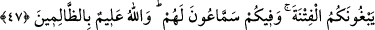

üzere şöyle buyurmuştur:
47. Eğer sizin içinizde (sefere) çıkmış olsalardı, size bozgunculuktan başka bir
katkıları olmazdı. Sizi birbirinize düşürmek için hemen aranıza sokulurlardı,
içinizde onlara kulak verenler de vardı. Allah zalimleri gayet iyi bilir.
“Eğer sizin içinizde” aranıza karışmış olarak sefere “çıkmış olsalardı, size
bozgunculuktan” cihaddan geri kalmanız ve birliğinizin dağılması için aranıza korku
salma, sizi kâfirlerin kuvveti ile korkutma, aranızda kovuculuk yapma, söz taşıma, arayı
bozma, fitne sokarak sizi birbirlerinize düşürme, bir işi bir kısmınıza güzel, diğer bir
kısmınıza çirkin gösterme gibi, size fesad ve şerden “başka bir katkıları olmazdı.”
Bu ifâdeden, Rasûlullah (s.a.)’in ashâbında fesad ve bozgunculuğun bulunduğu,
münâfıklar onların içinde cihada çıkarak bu fesadı artırdıkları anlamı çıkmaz.. Çünkü
istisna edilen “artırma” en geniş mânâda umum ifade eden “şey” lafzına nisbetledir,
yoksa müminlerde var olan kötü ve çirkin vasıflara (ki böyle bir şey müminlerde
yoktur) nisbetle değildir.
el-Bahr’da zikredildiğine göre bu savaşta çok sayıda münâfık vardı. Şüphesiz onların
bozgunculuk yapma özellikleri de vardı. Şayet müminlerle birlikte savaşa çıkmış
olsalardı kendi aralarında ittifak kurarlar ve fesad artardı.
“Sizi birbirinize düşürmek için hemen aranıza sokulurlardı.” Sizi fitneye düşürmeyi
arzulayarak aranıza sokulurlar ve düşmanlığı tahrik eden ya da hezimete götüren şeyleri
ilka etmek için koşarlardı.
“ __WORD__ (sokulmak)”, aslında binilen hayvanı mahmuzlamak ve sür’atlenmeye
zorlamaktır. O zaman buradaki ifade, onların kovuculuk yapmak için koşturmalarındaki
aşırılıklarını anlatmaktadır. Çünkü binek hayvanı ile giden yayadan daha sür’atlidir.
“Fitne”, birliğin dağılması demektir.
“İçinizde onlara kulak verenler de vardı.” Aranızda onlara aktarmak için sözlerinizi
dinleyen kovucular da vardı. Ya da aranızda münâfıklara kulak veren, yani onlara itaat
eden zayıf karakterli kimseler de vardı.
“Allah zâlimleri gayet iyi bilir.” İçlerini ve dışlarını, geçmişte yaptıklarını da
gelecekte yapacaklarını da ihata eden bir ilimle bilir. Hem kulak verenler hem de cihad
için sefere çıkmaktan geri duranlar âyette sözü edilen zâlimler grubuna girmektedir.